용접기능사 (2010-01-31 기출문제)
1과목: 용접일반
1. 용접선이 응력의 방향과 대략 직각인 필릿 용접은?
- 전면 필릿 용접
- 측면 필릿 용접
- 경사 필릿 용접
- 뒷면 필릿 용접
(정답률: 60%)

2. 불활성 가스 텅스텐 아크 용접에 주로 사용되는 가스는?
- He, Ar
- Ne, Lo
- Rn, Lu
- CO, Xe'
(정답률: 91%)
3. 연강재의 용접 이음부에 대한 충격하중이 작용할 때 안전율은?
- 3
- 5
- 8
- 12
(정답률: 49%)
4. 안전모의 내부수직거리로 가장 적당한 것은?
- 25㎜ 이상 50㎜ 미만일 것
- 15㎜ 이상 40㎜ 미만일 것
- 10㎜ 미만일 것
- 25㎜ 미만일 것
(정답률: 68%)
5. 용접순서를 결정하는 기준이 잘못 설명된 것은?
- 용접구조물이 조립되어 감에 따라 용접 작업이 불가능한 곳이 발생하지 않도록 한다.
- 용접물 중심에 대하여 항상 대칭적으로 용접한다.
- 수축이 작은 이음을 먼저 용접한 후 수축이 큰 이음을 뒤에 한다.
- 용접구조물의 중립축에 대한 수축모멘트의 합이 0 이 되도록 한다.
(정답률: 75%)
6. 서브머지드 아크 용접의 장점에 해당되지 않는 것은?
- 용접속도가 수동용접보다 빠르고 능률이 높다.
- 개선각을 작게하여 용접 패스 수를 줄일 수 있다.
- 콘택트 팁에서 통전되므로 와이어 중에 저항열이 적게 발생되어 고전류 사용이 가능하다.
- 용전집행상태의 좋고 나쁨을 육안으로 확인할 수 있다.
(정답률: 78%)
7. 전격의 방지대책에 대한 설명 중 틀린 것은?
- 땅, 물 등에 의해 습기찬 작업복, 장갑, 구두 등을 착용해도 된다.
- 홀더나 용접봉은 절대로 맨손으로 취급하지 않는다.
- 용접기의 내부에 함부로 손을 대지 않는다.
- 절연 홀더의 절연부분이 노출ㆍ파손되면 곧 보수하거나 교체한다.
(정답률: 91%)
8. 전기저항 점 용접법에 대한 설명으로 틀린 것은?
- 인터랙 점 용접이란 용접점의 부분에 직접 2개의 전극을 물리지 않고 용접전류가 피용접물의 일부를 통하여 다른 곳으로 전달하는 방식이다.
- 단극식 점 용접이란 전극이 1쌍으로 1개의 점 용접부를 만드는 것이다.
- 맥동 점 용접은 사이클 단위를 몇 번이고 전류를 연속하여 통전하며 용접 속도 향상 및 용접 변형 방지에 좋다.
- 직렬식 점 용접이란 1개의 전류 회로에 2개 이상의 용접점을 만드는 방법으로 전류 손실이 많아 전류를 증가시켜야 한다.
(정답률: 50%)
9. 불활성 가스 금속 아크 용접(MIG)법에서 가장 많이 사용되는 것으로 용가재가 고속으로 용융되어 미입자의 용적으로 분사되어 모재로 옳겨가는 이행 방식은?
- 단락 이행
- 입상 이행
- 펄스아크 이행
- 스프레이 이행
(정답률: 79%)
10. CO2아크 용접에서 가장 두꺼운 판에 사용되는 용접 홈은?
- I형
- V형
- H형
- J형
(정답률: 69%)
11. 융점 450℃ 이상의 땜납재인 경납에 속하지 않는 것은?
- 주석-납
- 황동납
- 인동납
- 은납
(정답률: 53%)
12. 아크 용접 작업 중 허용전류가 20~50(mA)일 때 인체에 미치는 영향으로 맞는 것은?
- 고통을 느끼고 가까운 근육이 저려서 움직이지 않는다.
- 고통을 느끼고 강한 근육 수축이 일어나며 호흡이 곤란하다.
- 고통을 수반한 쇼크를 느낀다.
- 순간적으로 사망할 위험이 있다.
(정답률: 62%)
13. 용접결함이 오버랩일 경우 그 보수방법으로 가장 적당한 것은?
- 정지구멍을 뚫고 재 용접한다.
- 일부분을 깍아내고 재 용접한다.
- 가는 용접봉을 사용하여 재 용접한다.
- 결함부분을 절단하여 재 용접한다.
(정답률: 63%)
14. 용접균열에서 저온균열은 일반적으로 몇 ℃ 이하에서 발생하는 균열을 말하는가?
- 200 ~ 300℃ 이하
- 300 ~ 400℃ 이하
- 400 ~ 500℃ 이하
- 500 ~ 600℃ 이하
(정답률: 62%)
15. 용접부의 시험 및 검사의 분류에서 충격 시험은 무슨 시험에 속하는가?
- 기계적 시험
- 낙하 시험
- 화학점 시험
- 압력 시험
(정답률: 70%)
16. 볼트나 환봉을 피스톤형의 홀더에 끼우고 모재와 볼트 사이에 순간적으로 아크를 발생시켜 용접하는 방법은?
- 서브머지드 아크 용접
- 스터드 용접
- 테르밋 용접
- 불활성가스 아크 용접
(정답률: 73%)
17. TIG 용접에서 교류(AC), 직류 정극성(DCSP),직류역극성(DCRP)의 용입깊이를 비교한 것 중 옳은 것은?(오류 신고가 접수된 문제입니다. 반드시 정답과 해설을 확인하시기 바랍니다.)
- DCSP < AC < DCRP
- AC < DCSP < DCRP
- AC < DCRP < DCSP
- DCRP < AC < DCSP
(정답률: 52%)
18. 용접봉의 습기가 원인이 되어 발생하는 결함으로 가장 적절한 것은?
- 선상조직
- 기공
- 용입불량
- 슬래그 섞임
(정답률: 70%)
19. 테르밋 용접의 특징에 대한 설명 중 틀린 것은?
- 용접 작업이 단순하다.
- 용접 시간이 길고 용접 후 변형이 크다
- 용접기구가 간단하고 작업장소의 이동이 쉽다.
- 전기가 필요 없다.
(정답률: 76%)
20. 두께가 3.2mm인 박판을 탄산가스 아크 용접법으로 맞대기 용접을 하고자 한다. 용접전류 100A를 사용할 때 이에 적합한 아크 전압[V]의 조정 범위는 어느 정도인가?
- 10 ~ 13[V]
- 18 ~ 21[V]
- 23 ~ 26[V]
- 28 ~ 31[V]
(정답률: 53%)
21. 용접부의 결함 검사법에서 초음파 탐상법의 종류에 해당되지 않는 것은?
- 스테레오법
- 투과법
- 펄스반사법
- 공진법
(정답률: 61%)
22. 가스절단 작업시 유의할 사항으로 틀린 것은?
- 호스가 꼬여 있는지 확인한다.
- 가스절단에 알맞은 보호구를 착용한다.
- 절단부가 예리하고 날카로우므로 상처를 입지 않도록 주의한다.
- 절단 진행 중에 시선은 절단면을 떠나도 된다.
(정답률: 89%)
23. 피복 아크 용접 작업에서 아크길이 및 아크전압에 관한 설명으로 틀린 것은?
- 품질 좋은 용접을 하려면 원칙적으로 짧은 아크를 사용해야 한다.
- 아크 길이가 너무 길면 아크가 불안정하고, 용융금속이 산화 및 질화되기 어렵다.
- 아크 길이가 보통 용접봉 심선의 지름 정도이나 일반적인 아크의 길이는 3mm 정도이다.
- 아크 전압은 아크 길이에 비례한다.
(정답률: 39%)
24. 용극식 용접법으로 용접봉과 모재 사이에 발생하는 아크의 열을 이용하여 용접하는 것은?
- 피복 아크 용접
- 플라스마 아크 용접
- 테르밋 용접
- 이산화탄소 아크 용접
(정답률: 67%)
25. 헬멧이나 핸드실드의 차광유리 앞에 보호유리를 끼우는 가장 타당한 이유는?
- 시력을 보호하기 위하여
- 가시광선을 차단하기 위하여
- 적외선을 차단하기 위하여
- 차광유리를 보호하기 위하여
(정답률: 78%)
26. 가연성 가스의 종류 중 불꽃의 온도가 가장 높은 것은?
- 아세틸렌
- 수소
- 프로판
- 메탄
(정답률: 58%)
27. 교류 아크 용접기에 비해 직류 아크 용접기에 관한 설명으로 올바른 것은?
- 구조가 간단하다.
- 아크 안정감이 떨어진다.
- 감전의 위험이 많다.
- 극성의 변화가 가능하다.
(정답률: 45%)
28. 가스용접시 모재의 두께가 3.2mm일 때 용접봉의 지름(mm)으로 가장 적당한 것은?
- 1.2
- 2.6
- 3.5
- 4.0
(정답률: 80%)
29. 피복 아크 용접봉의 용융속도를 결정하는 식은?
- 용융속도= 아크전류 × 용접봉 쪽 전압강하
- 용융속도= 아크전류 × 모재 쪽 전압강하
- 용융속도= 아크전압 × 용접봉 쪽 전압강하
- 용융속도= 아크전압 × 모재 쪽 전압강하
(정답률: 58%)
30. 내용적 33.7ℓ의 산소병에 150kgf/㎠ 의 압력이 게이지에 표시되었다면 산소병에 들어 잇는 산소량은 몇 ℓ 인가?
- 3400
- 5⑤5
- 4700
- 4800
(정답률: 79%)
31. 아세틸렌은 각종 액체에 잘 용해된다. 그러면 1기압 아세톤 2ℓ에는 몇 ℓ의 아세틸렌이 용해되는가?
- 2
- 10
- 25
- 50
(정답률: 48%)
32. 아크에어 가우징의 작업 능률은 치핑이나. 그라인딩 또는 가스 가우징보다 몇 배 정도 높은가?
- 10 ~ 12배
- 8 ~9 배
- 5 ~ 6 배
- 2 ~ 3 배
(정답률: 47%)
33. 용접 열원에서 기계적 에너지를 사용하는 용접법은?
- 초음파 용접
- 고주파 용접
- 전자빔 용접
- 레이저빔 용접
(정답률: 36%)
34. 피복 아크 용접봉의 용접부 보호방식에 의한 분류에 속하지 않는 것은?
- 슬래그 생성식
- 가스 발생식
- 아크 발생식
- 반가스 발생식
(정답률: 48%)
35. 특수 절단 및 가스 가공 방법이 아닌 것은?
- 수중 절단
- 스카핑
- 치핑
- 가스 가우징
(정답률: 56%)
2과목: 용접재료
36. 교류전원이 없는 옥외 장소에서 사용하는데 가장 적합한 직류 아크 용접기는?
- 정류기형
- 기동 철심형
- 엔진 구동형
- 전동 발전형
(정답률: 45%)
37. 산소-아세틸렌가스로 두께가 25mm 이하인 연강판을 산소 절단 할 때 차광번호로 가장 적합한 것은?
- 10 ~ 12
- 7 ~8
- 3 ~ 4
- 12 ~ 14
(정답률: 35%)
38. 가스 용접에서 전진법과 비교한 후진법의 특징 설명으로 옳은 것은?
- 용접속도가 느리다.
- 홈 각도가 크다.
- 용접가능 판 두께가 두껍다.
- 용접변형이 크다.
(정답률: 64%)
39. 가스절단에서 절단용 산소 중에 불순물이 증가하면 나타나는 결과가 아닌 것은?
- 절단면이 거칠어 진다.
- 절단속도가 늦어진다.
- 슬래그의 이탈성이 나빠진다.
- 산소의 소비량이 적어진다.
(정답률: 72%)
40. 탄소 공구강 및 일반 공구재료의 구비조건 중 틀린 것은?
- 상온 및 고온경도가 클 것
- 내마모성이 클 것
- 강인성 및 내충격성이 작을 것
- 가공 및 열처리성이 양호할 것
(정답률: 56%)
41. 두랄루민(duralumin)의 성분 재료로 맞는 것은?
- Al, Cu, Mg, Mn
- Al, Cu, Fe, Si
- Al, Fe, Si, Mg
- Al, Cu, Mn, Pb
(정답률: 73%)
42. 기본열처리 방법의 목적을 설명한 것으로 틀린 것은?
- 담금질 - 급냉시켜 재질을 경화시킨다.
- 풀림 - 재질을 연하고 균일화하게 한다.
- 뜨임 - 담금질된 것에 취성을 부여한다.
- 불림 - 소재를 일정온도에서 가열 후, 공냉시켜 표준화 한다.
(정답률: 58%)
43. 구리와 구리 합금이 다른 금속에 비하여 우수한 점이 아닌 것은?
- 전기 및 열 전도율이 높다.
- 연하고 전연성이 좋아 가공하기 쉽다.
- 철강보다 비중이 낮아 가볍다.
- 철강에 비해 내식성이 좋다.
(정답률: 45%)
44. 주강의 특성을 설명한 것으로 틀린 것은?
- 유동성이 나쁘다.
- 주조시의 수축이 적다.
- 고온 인장강도가 낮다.
- 표피 및 그 인접부분의 품질이 양호하다.
(정답률: 33%)
45. 마그네슘 합금의 성질 및 특징을 나타낸 것으로 적당하지 않은 것은?
- 비강도가 크고, 냉간가공이 거의 불가능하다.
- 인장강도, 연신율, 충격값이 두랄루민보다 적다.
- 피절삭성이 좋으며, 부품의 무게 경감에 큰 효과가 있다.
- 바닷물에 접촉하여도 침식되지 않는다.
(정답률: 63%)
46. 냉간가공의 특징을 설명한 것으로 틀린 것은?
- 제품의 표면이 미려하다.
- 제품의 치수 정도가 좋다.
- 가공경화에 의한 강도가 낮아진다.
- 가공공수가 적어 가공비가 적게 든다.
(정답률: 52%)
47. 산소-아세틸렌 가스를 사용하여 담금질성이 있는 강제의 표면만을 경화시키는 방법은?
- 화염 경화법
- 질화법
- 고주파 경화법
- 가스 침탄법
(정답률: 47%)
48. 주로 전자기 재료로 사용되는 Ni-Fe 합금이 아닌 것은?
- 인바
- 슈퍼인바
- 콘스탄탄
- 플라티나이트
(정답률: 54%)
49. 오스테나이트계 스테인리스강 용접시 유의해야 할 사항이 아닌 것은?
- 아크를 중단하기 전에 크레이터 처리를 한다.
- 아크 길이를 길게 유지한다.
- 낮은 전류로 용접하여 용접 입열을 억제한다.
- 용접봉은 가급적 모재의 재질과 동일한 것을 사용한다.
(정답률: 64%)
50. 가단 주철은 주조성이 우수한 백선주물을 만들고 열처리 함으로써 강인한 조직과 단조를 가능케 한 주철인데 그 종류가 아닌 것은?
- 백심가단주철
- 펄라이트 가단주철
- 특수가단주철
- 오스테나이트 가단주철
(정답률: 41%)
3과목: 기계제도
51. 그림과 같은 용접도시기호를 올바르게 해석한 것은?
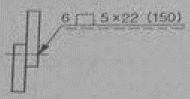
- 슬롯 용접의 용접 수 22
- 슬롯의 너비 6mm, 용접길이 22mm
- 슬롯 용접 루트간격 6mm, 폭 150mm
- 슬롯의 너비 5mm, 피치 22mm
(정답률: 46%)
52. 보기 입체도에서 화살표 방향 투상도로 적합한 것은?
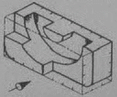
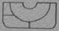
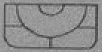
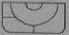
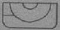
(정답률: 78%)
53. 다음 중 머리부를 포함한 리벳의 전체 길이로 리벳 호칭 길이를 나타내는 것은?
- 얇은 납작머리 리벳
- 접시머리 리벳
- 둥근머리 리벳
- 냄비머리 리벳
(정답률: 56%)
54. 기계제도에서 사용하는 선의 용도에 따라 사용하는 선의 종류가 틀린 것은?
- 외형선 : 가는 실선
- 피치선 : 가는 1점 쇄선
- 중심선 : 가는 1점 쇄선
- 숨은선 : 가는 파선 또는 굵은 파선
(정답률: 49%)
55. 용접부의 보조기호에서 제거 가능한 이면 판재를 사용하는 경우의 표면 기호는?
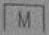
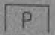
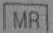
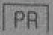
(정답률: 63%)
56. 그림과 같은 입체도에서 화살표 방향이 정면일 때 3각법으로 올바르게 투상한 것은?
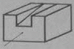
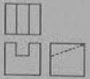
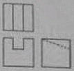
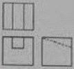
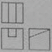
(정답률: 68%)
57. 모서리나 중심축에 평행선을 그어 전개하는 방법으로 주로 각기둥이나 원기둥을 전개하는데 가장 적합한 전개도법의 종류는?
- 삼각형을 이용한 전개도법
- 평행선을 이용한 전개도법
- 방사선을 이용한 전개도법
- 사다리꼴을 이용한 전개도법
(정답률: 78%)
58. 원호의 길이 42mm를 나타낸 것으로 옳은 것은?
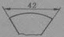
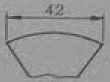
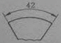
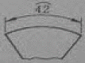
(정답률: 56%)
59. 3개의 좌표축의 투상이 서로 120°가 되는 추측 투상으로 평명, 측면, 정면을 하나의 투상면 위에 동시에 볼 수 있도록 그려진 투상법은?
- 등각 투상법
- 국부 투상법
- 정 투상법
- 경사 투상법
(정답률: 53%)
60. 도면에서 표제란의 투상법란에 그림과 같은 투상법 기호로 표시되는 경우는 몇 각법 기호인가?
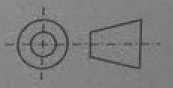
- 1각법
- 2각법
- 3각법
- 4각법
(정답률: 76%)